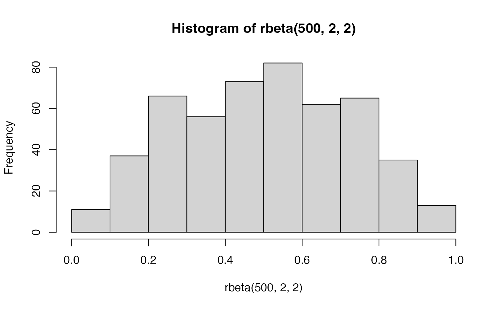
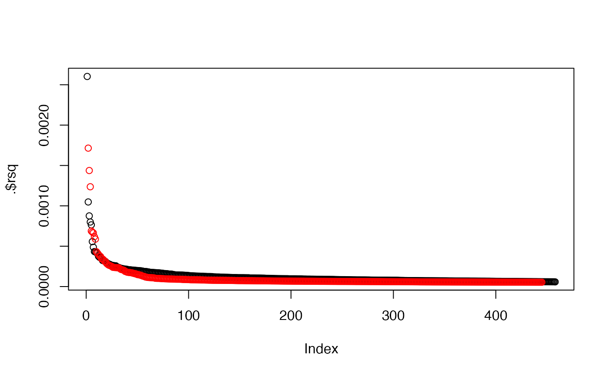

vignettes/mr_dgp.rmd
mr_dgp.rmdBackground: Deep IV can infer causal effects in which the sample is stratified by one or many covariates, and there is a different causal effect within each stratum.
The covariates don’t necessarily need to be directly measured, could have a large number of proxy variables for example.
To be realistic, obtain known associations for BMI:
## API: public: http://gwas-api.mrcieu.ac.uk/##
## Attaching package: 'dplyr'## The following objects are masked from 'package:stats':
##
## filter, lag## The following objects are masked from 'package:base':
##
## intersect, setdiff, setequal, union## Loading required package: ggplot2##
## Attaching package: 'ggdag'## The following object is masked from 'package:stats':
##
## filter## tibble [458 × 12] (S3: tbl_df/tbl/data.frame)
## $ n : int [1:458] 461460 461460 461460 461460 461460 461460 461460 461460 461460 461460 ...
## $ se : num [1:458] 0.00261 0.00346 0.00237 0.00622 0.0046 ...
## $ position: int [1:458] 32196647 62579891 98315893 110082551 111338672 112324111 156489974 174321997 11207269 16848652 ...
## $ p : num [1:458] 8.0e-10 1.2e-21 3.3e-11 4.0e-28 2.5e-08 ...
## $ chr : chr [1:458] "1" "1" "1" "1" ...
## $ beta : num [1:458] 0.0161 -0.0331 0.0157 0.0684 -0.0256 ...
## $ id : chr [1:458] "ukb-b-19953" "ukb-b-19953" "ukb-b-19953" "ukb-b-19953" ...
## $ rsid : chr [1:458] "rs909001" "rs12140153" "rs12072739" "rs41279738" ...
## $ ea : chr [1:458] "G" "T" "G" "G" ...
## $ nea : chr [1:458] "C" "G" "A" "T" ...
## $ eaf : num [1:458] 0.1721 0.0943 0.2245 0.026 0.0483 ...
## $ trait : chr [1:458] "Body mass index (BMI)" "Body mass index (BMI)" "Body mass index (BMI)" "Body mass index (BMI)" ...There are 458 independent instruments for BMI. All the instruments have small effects:
bmi_hits$rsq <- 2 * bmi_hits$beta^2 * bmi_hits$eaf * (1 - bmi_hits$eaf) hist(bmi_hits$rsq, breaks=100)
In total the 458 BMI hits explain 5.7329823% of the variance in BMI.
What is the effect on coronary heart disease?
chd_assoc <- ieugwasr::associations(variants=bmi_hits$rsid, id="ieu-a-7") dat <- merge(bmi_hits, chd_assoc, by="rsid") str(dat)
## 'data.frame': 451 obs. of 31 variables:
## $ rsid : chr "rs1000096" "rs10063055" "rs10099330" "rs10160769" ...
## $ n.x : int 461460 461460 461460 461460 461460 461460 461460 461460 461460 461460 ...
## $ se.x : num 0.00203 0.00227 0.00199 0.00242 0.00206 ...
## $ position.x: int 38692835 140990108 143383694 76474827 41637688 208307761 104242992 46182304 19288508 118650996 ...
## $ p.x : num 5.1e-11 1.7e-09 4.2e-10 1.2e-10 3.0e-09 ...
## $ chr.x : chr "4" "5" "8" "11" ...
## $ beta.x : num -0.0133 0.0137 0.0124 -0.0156 0.0122 ...
## $ id.x : chr "ukb-b-19953" "ukb-b-19953" "ukb-b-19953" "ukb-b-19953" ...
## $ ea.x : chr "T" "T" "G" "C" ...
## $ nea.x : chr "C" "C" "A" "G" ...
## $ eaf.x : num 0.401 0.253 0.453 0.218 0.363 ...
## $ trait.x : chr "Body mass index (BMI)" "Body mass index (BMI)" "Body mass index (BMI)" "Body mass index (BMI)" ...
## $ rsq : num 8.55e-05 7.08e-05 7.65e-05 8.27e-05 6.87e-05 ...
## $ n.y : int 184305 184305 184305 184305 184305 184305 184305 184305 184305 184305 ...
## $ chr.y : chr "4" "5" "8" "11" ...
## $ beta.y : num 0.01491 0.03096 0.01195 -0.00819 0.01167 ...
## $ p.y : num 0.12515 0.00507 0.1991 0.46067 0.24353 ...
## $ se.y : num 0.00972 0.01105 0.0093 0.0111 0.01001 ...
## $ position.y: int 38692835 140990108 143383694 76474827 41637688 208307761 104242992 46182304 19288508 118650996 ...
## $ id.y : chr "ieu-a-7" "ieu-a-7" "ieu-a-7" "ieu-a-7" ...
## $ ea.y : chr "T" "T" "G" "C" ...
## $ nea.y : chr "C" "C" "A" "G" ...
## $ eaf.y : num 0.357 0.229 0.464 0.239 0.344 ...
## $ target_snp: chr "rs1000096" "rs10063055" "rs10099330" "rs10160769" ...
## $ proxy_snp : chr "rs1000096" "rs10063055" "rs10099330" "rs10160769" ...
## $ proxy : logi FALSE FALSE FALSE FALSE FALSE FALSE ...
## $ target_a1 : chr NA NA NA NA ...
## $ target_a2 : chr NA NA NA NA ...
## $ proxy_a1 : chr NA NA NA NA ...
## $ proxy_a2 : chr NA NA NA NA ...
## $ trait.y : chr "Coronary heart disease" "Coronary heart disease" "Coronary heart disease" "Coronary heart disease" ...##
## Call:
## lm(formula = beta.y ~ 0 + beta.x, data = dat, weights = 1/dat$se.y^2)
##
## Weighted Residuals:
## Min 1Q Median 3Q Max
## -6.0687 -0.7478 -0.0287 0.7944 6.7194
##
## Coefficients:
## Estimate Std. Error t value Pr(>|t|)
## beta.x 0.41818 0.03513 11.9 <2e-16 ***
## ---
## Signif. codes: 0 '***' 0.001 '**' 0.01 '*' 0.05 '.' 0.1 ' ' 1
##
## Residual standard error: 1.233 on 450 degrees of freedom
## Multiple R-squared: 0.2395, Adjusted R-squared: 0.2378
## F-statistic: 141.7 on 1 and 450 DF, p-value: < 2.2e-16This is a pretty big effect. So use that as a ceiling. Need a model to relate variance explained by all the variants, the effect sizes, and the minor allele frequencies (MAFs) of the variants
The variance explained by a variant \(G_j\) is related to
\[ V_{G_j} = 2 \beta_j p_j (1-p_j) \] where \(p_j\) is the minor allele frequency of the variant, and \(\beta_j\) is its effect size. What is the distribution of allele frequencies of instruments for BMI?
bmi_hits$maf <- bmi_hits$eaf bmi_hits$maf[bmi_hits$maf > 0.5] <- 1 - bmi_hits$maf[bmi_hits$maf > 0.5] hist(bmi_hits$maf)
And the relationship between MAF and effect size
Deciding how the the effect sizes relate to allele frequency depends on model of natural selection, parameter \(S\), which can inform the sampling of the SNP effect sizes like this:
\[ \beta_j \sim N(0, [2p_j (1-p_j)]^S \sigma^2_\beta) \]
Here \(\sigma^2_\beta = V_G / M\) where \(M\) is the number of causal variants for the trait and \(V_G\) is the variance explained by all those SNPs, which relates to the heritability equation of \(h^2 = V_G / V_P\), where \(V_P\) is the phenotypic variance.
Problem with this model is that if we assume that all the instruments explain the entire variance of the trait then a lot of the \(\beta_j\) values will be too small to be realistic instruments. So the strategy would be to
Ultimately, we can draw allele frequencies from some distribution e.g.
\[ p_j \sim Beta(\alpha=2,\beta=2) \]
This would approx match the frequencies of the instruments for BMI:

But it’s probably not representative of the full set of causal variants, because we have more power to detect common variants. Perhaps just use a uniform distribution. Bringing it all together:
#' Generate realistic variant effects from GWAS #' #' @param af Array of allele frequencies for every variant that a variant effect needs to be generated #' @param h2 Heritability of the trait (e.g. BMI =~ 0.5) #' @param S Selection coefficient. 0 = neutral (no selection), +ve = positive selection, -ve = negative selection #' @param h2_inst Variance explained by the detected variants. e.g. for BMI =~ 0.05 #' #' @return Data frame generate_beta_gx <- function(af, h2, S=0, h2_inst) { nvariant <- length(af) if(h2 == 0) { return(dplyr::tibble(beta=0, af=af)) } # Sample variant effects based on S and allele frequency beta <- rnorm(nvariant, mean=0, sd = sqrt((af * 2 * (1-af))^S)) # Scale effects to be in standard deviation units and to explain the total h2 vg <- sum(af * 2 * (1-af) * beta^2) ve <- (vg - h2 * vg) / h2 vy <- vg + ve beta <- beta / sqrt(vy) # Select variants to be detected as instruments dat <- dplyr::tibble(beta=beta, af=af) dat$rsq <- dat$beta^2 * 2 * dat$af * (1 - dat$af) dat <- dplyr::arrange(dat, desc(rsq)) dat$rsq_cumsum <- cumsum(dat$rsq) dat$instrument <- dat$rsq_cumsum <= h2_inst # If the first instrument explains all of instrument variance then just use that dat$instrument[1] <- TRUE return(dat) }
Example:
bgx <- generate_beta_gx(af = rbeta(40000, 1, 1), h2 = 0.5, S = 0, h2_inst = 0.05) sum(bgx$instrument)
## [1] 384These parameters give something similar to the number of detected hits for BMI. Check that the distribution of rsq values are similar. BMI (black) and simulated (red):
bmi_hits %>% dplyr::arrange(desc(rsq)) %>% {plot(.$rsq)} points(subset(bgx, instrument)$rsq, col="red")
The difference here is that a more appropriate model would be that different sets of variants are drawn from different distributions. For example, 1% of the variance could be explained by 10 variants, and the other 4% by 400. variants. The model gets a bit verbose doing it like this, potentially requring a different S parameter for different sets of variants, which doesn’t really make sense.
generate_beta_gx2 <- function(af, h2, S=0, h2_inst) { stopifnot(is.list(af)) stopifnot(length(h2) == length(af)) dat <- list() for(i in 1:length(af)) { dat[[i]] <- generate_beta_gx(af=af[[i]], h2=h2[i], S=S, h2_inst = 1) } dat <- bind_rows(dat) dat$rsq <- dat$beta^2 * 2 * dat$af * (1 - dat$af) dat <- dplyr::arrange(dat, desc(rsq)) dat$rsq_cumsum <- cumsum(dat$rsq) dat$instrument <- dat$rsq_cumsum <= h2_inst # If the first instrument explains all of instrument variance then just use that dat$instrument[1] <- TRUE return(dat) }
Try again:
bgx <- generate_beta_gx2(af=list(runif(10), runif(80), runif(200), runif(90000)), h2=c(0.01, 0.01, 0.01, 0.48), S=0, h2_inst=0.05) sum(bgx$instrument)
## [1] 444bmi_hits %>% dplyr::arrange(desc(rsq)) %>% {plot(.$rsq)} points(subset(bgx, instrument)$rsq, col="red")

These parameters give something similar to the number and distribution of detected hits for BMI. There are other things that we haven’t accounted for here such as winner’s curse. Check that the distribution of rsq values are similar.
\[ \begin{aligned} x_i &= a^x + \beta_{xG}G_i + \beta_{xC}C_i + \epsilon^x_i \\ y_i &= a^y + \beta_{yx} x_i + \beta_{yC}C_i + \beta_{yG}G_i + \epsilon^y_i \end{aligned} \]
Expect quite substantial confounding and relatively small causal effects. Easiest to talk about in terms of variance explained.
#' Title #' #' @param sample_size #' @param af Vector of allele frequencies (should be between 0 and 1) #' #' @return Matrix generate_G <- function(sample_size, af) { m <- matrix(0, sample_size, length(af)) for(i in 1:length(af)) { m[,i] <- rbinom(sample_size, 2, af[i]) } return(m) } #' Scale genetic effects to satisfy heritability parameter #' #' Supposing that we want all our sampled effects to explain a particular amount of variance in the trait, we can transform those effects based on the allele frequencies of the variants #' #' @param beta vector of effects #' @param af vector of allele frequencies #' @param h2 variance explained by the effects (assuming trait variance is 1) #' #' @return vector of scaled effects scale_bg <- function(beta, af, h2) { vg <- sum(af * 2 * (1-af) * beta^2) ve <- (vg - h2 * vg) / h2 vy <- vg + ve beta <- (beta - mean(beta)) / sqrt(vy) return(beta) } #' Effect of x on y constant, with allowance for balanced pleiotropy #' #' @param sample_size Sample size to generate #' @param h2 Heritability of x #' @param nvariants Number of causal variants of x #' @param h2_inst Variance explained by detected instruments #' @param S Selection coefficient #' @param maf_alpha Allele frequency distribution shape parameter, to be fed into beta distribution. #' @param maf_beta Allele frequency distribution shape parameter, to be fed into beta distribution. #' @param rsq_yx Causal variance explained in y by x #' @param rsq_xu Variance explained in x by unmeasured confounder #' @param rsq_yu Variance explained in y by unmeasured confounder #' @param rsq_yg Horizontal pleiotropy parameter, variance explained by all variants #' #' @return List #' \itemize{ #' \item x - Vector #' \item y - Vector #' \item u - Vector #' \item G - Matrix #' } dgp1 <- function(sample_size, h2, nvariants, h2_inst, S, maf_alpha, maf_beta, rsq_yx, rsq_xu, rsq_yu, rsq_yg) { stopifnot(rsq_xu + h2_inst <= 1) stopifnot(rsq_yu + rsq_yx + rsq_yg <= 1) # Generate allele frequencies for all causal variants af <- rbeta(nvariants, maf_alpha, maf_beta) # generate confounder u <- rnorm(sample_size) # Generate random errors for x and y epsilon_x <- rnorm(sample_size, mean=0, sd=sqrt(1 - rsq_xu - h2_inst)) epsilon_y <- rnorm(sample_size, mean=0, sd=sqrt(1 - rsq_yu - rsq_yx - rsq_yg)) # Generate instrument effects on x bgx <- generate_beta_gx(af=af, h2=h2, S=S, h2_inst=h2_inst) %>% dplyr::filter(instrument) # Generate genotype matrix G <- generate_G(sample_size, bgx$af) # Generate horizontal pleiotropy effects bgy <- scale_bg(rnorm(nrow(bgx)), bgx$af, rsq_yg) # generate x and y x <- G %*% bgx$beta + u * sqrt(rsq_xu) + epsilon_x y <- G %*% bgy + u * sqrt(rsq_yu) + epsilon_y + x * sqrt(rsq_yx) return(list(x=x, y=y, u=u, G=G)) }
dat <- dgp1(40000, 0.5, 40000, 0.04, 0, 1, 1, 0.01, 0.1, 0.1, 0.05) bgxhat <- simulateGP::gwas(dat$x, dat$G) bgyhat <- simulateGP::gwas(dat$y, dat$G) plot(bgyhat$bhat ~ bgxhat$bhat)
##
## Call:
## lm(formula = bgyhat$bhat ~ 0 + bgxhat$bhat, weights = 1/bgyhat$se^2)
##
## Weighted Residuals:
## Min 1Q Median 3Q Max
## -8.4603 -1.8933 0.0455 1.9665 6.7392
##
## Coefficients:
## Estimate Std. Error t value Pr(>|t|)
## bgxhat$bhat 0.13612 0.06537 2.082 0.0382 *
## ---
## Signif. codes: 0 '***' 0.001 '**' 0.01 '*' 0.05 '.' 0.1 ' ' 1
##
## Residual standard error: 2.799 on 283 degrees of freedom
## Multiple R-squared: 0.01509, Adjusted R-squared: 0.01161
## F-statistic: 4.335 on 1 and 283 DF, p-value: 0.03823parameters <- expand.grid( h2 = 0.5, nvariants = 40000, h2_inst = 0.05, S = 0, maf_alpha = 1, maf_beta = 1, sample_size = 400000, rsq_yx = c(0, 0.001, 0.01, 0.05), rsq_xu = 0.1, rsq_yu = 0.1, rsq_yg = c(0, 0.01, 0.05, 0.1) )
If there is a covariate \(c\) that can have an influence on both \(x\) and \(y\), but the causal effect of \(x\) on \(y\) depends on the value of \(c\). Suppose that \(c\) is split across \(k\) strata, and the causal effect of \(x\) on \(y\) is given as \(b_{xy}^k\).
#' Effect of x on y varies based on covariate #' #' @param sample_size Sample size to generate #' @param h2 Heritability of x #' @param nvariants Number of causal variants of x #' @param h2_inst Variance explained by detected instruments #' @param S Selection coefficient #' @param maf_alpha Allele frequency distribution shape parameter, to be fed into beta distribution. #' @param maf_beta Allele frequency distribution shape parameter, to be fed into beta distribution. #' @param r_yx Vector of causal effects of x on y. Samples will be split into a number of groups based on this vector. The split is based on the covariate value c. Assumes variance of x and y both 1 #' @param r_xu Effect of unmeasured confounder on x (assuming variance of x and u both 1) #' @param r_yu Effect of unmeasured confounder on y (assuming variance of y and u both 1) #' @param r_xc Effect of interacting covariate on x (assuming variance of x and c both 1) #' @param r_yc Effect of interacting covariate on y (assuming variance of y and c both 1) #' @param rsq_yg Horizontal pleiotropy parameter, variance explained by all variants #' #' @return List #' \itemize{ #' \item x - Vector #' \item y - Vector #' \item c - Vector #' \item u - Vector #' \item G - Matrix #' } dgp2 <- function(sample_size, h2, nvariants, h2_inst, S, maf_alpha, maf_beta, r_yx, r_xu, r_yu, r_xc, r_yc, rsq_yg) { # The overall variance explained in y by x # This is probably wrong! rsq_yx <- mean(r_yx^2) # Checks stopifnot(r_xu^2 + r_xc^2 + h2_inst <= 1) stopifnot(r_yu^2 + r_yc^2 + rsq_yx + rsq_yg <= 1) # Generate allele frequencies af <- rbeta(nvariants, maf_alpha, maf_beta) # Create unmeasured confounder u <- rnorm(sample_size) # Create interaction variable c c <- rnorm(sample_size) # Error term in x epsilon_x <- rnorm(sample_size, mean=0, sd=sqrt(1 - r_xu^2 - r_xc^2 - h2_inst)) # Error term in y epsilon_y <- rnorm(sample_size, mean=0, sd=sqrt(1 - r_yu^2 - r_yc^2 - rsq_yx - rsq_yg)) # Generate instrument effects on x bgx <- generate_beta_gx(af=af, h2=h2, S=S, h2_inst=h2_inst) %>% dplyr::filter(instrument) # Generate genotype matrix G <- generate_G(sample_size, bgx$af) # Pleiotropic effects bgy <- scale_bg(rnorm(nrow(bgx)), bgx$af, rsq_yg) # Simulate x and y (excluding x->y effect) x <- G %*% bgx$beta + u * r_xu + c * r_xc + epsilon_x y <- G %*% bgy + u * r_yu + c * r_yc + epsilon_y # Split sample into strata nstrata <- length(r_yx) quantiles <- quantile(c, seq(0, 1, length.out=nstrata+1)) quantiles[1] <- quantiles[1] - 1 # Add causal effect for each stratum for(i in 1:nstrata) { index <- c > quantiles[i] & c <= quantiles[i+1] y[index] <- y[index] + x[index] * r_yx[i] } return(list(x=x, y=y, u=u, c=c, G=G)) }
Example:
dat <- dgp2(sample_size=10000, h2=0.5, nvariants=40000, h2_inst=0.05, S=0, maf_alpha=1, maf_beta=1, r_yx=c(-0.2, 0.2), r_xu=0.1, r_yu=0.1, r_xc=0, r_yc=0, rsq_yg=0) bgxhat <- simulateGP::gwas(dat$x, dat$G) bgyhat <- simulateGP::gwas(dat$y, dat$G) plot(bgyhat$bhat ~ bgxhat$bhat)
##
## Call:
## lm(formula = bgyhat$bhat ~ 0 + bgxhat$bhat, weights = 1/bgyhat$se^2)
##
## Weighted Residuals:
## Min 1Q Median 3Q Max
## -2.56776 -0.73760 -0.07787 0.63158 2.51987
##
## Coefficients:
## Estimate Std. Error t value Pr(>|t|)
## bgxhat$bhat -0.003322 0.031303 -0.106 0.916
##
## Residual standard error: 0.9718 on 405 degrees of freedom
## Multiple R-squared: 2.781e-05, Adjusted R-squared: -0.002441
## F-statistic: 0.01126 on 1 and 405 DF, p-value: 0.9155index <- dat$c < mean(dat$c) bgxhat1 <- simulateGP::gwas(dat$x[index], dat$G[index,]) bgyhat1 <- simulateGP::gwas(dat$y[index], dat$G[index,]) bgxhat2 <- simulateGP::gwas(dat$x[!index], dat$G[!index,]) bgyhat2 <- simulateGP::gwas(dat$y[!index], dat$G[!index,]) plot(bgyhat1$bhat ~ bgxhat1$bhat)
##
## Call:
## lm(formula = bgyhat1$bhat ~ 0 + bgxhat1$bhat, weights = 1/bgyhat1$se^2)
##
## Weighted Residuals:
## Min 1Q Median 3Q Max
## -3.6218 -0.7185 -0.0441 0.5751 3.9648
##
## Coefficients:
## Estimate Std. Error t value Pr(>|t|)
## bgxhat1$bhat -0.23589 0.03776 -6.246 1.06e-09 ***
## ---
## Signif. codes: 0 '***' 0.001 '**' 0.01 '*' 0.05 '.' 0.1 ' ' 1
##
## Residual standard error: 0.9842 on 405 degrees of freedom
## Multiple R-squared: 0.08788, Adjusted R-squared: 0.08562
## F-statistic: 39.02 on 1 and 405 DF, p-value: 1.063e-09plot(bgyhat2$bhat ~ bgxhat2$bhat)
##
## Call:
## lm(formula = bgyhat2$bhat ~ 0 + bgxhat2$bhat, weights = 1/bgyhat2$se^2)
##
## Weighted Residuals:
## Min 1Q Median 3Q Max
## -3.2872 -0.7300 0.0244 0.6918 2.4739
##
## Coefficients:
## Estimate Std. Error t value Pr(>|t|)
## bgxhat2$bhat 0.23889 0.03868 6.176 1.6e-09 ***
## ---
## Signif. codes: 0 '***' 0.001 '**' 0.01 '*' 0.05 '.' 0.1 ' ' 1
##
## Residual standard error: 1.03 on 405 degrees of freedom
## Multiple R-squared: 0.08607, Adjusted R-squared: 0.08381
## F-statistic: 38.14 on 1 and 405 DF, p-value: 1.604e-09Generate proxies to \(C\) using Cholesky decomposition of a randomly generated correlation matrix
generate_cors <- function(C, nproxy, cors) { cormat <- matrix(cors, nproxy+1, nproxy+1) diag(cormat) <- 1 stopifnot(all(eigen(cormat)$values > 0)) x <- matrix(rnorm(length(C) * (nproxy+1)), length(C), nproxy+1) x[,1] <- C y <- x %*% solve(chol(var(x))) %*% chol(cormat) return(y[,-1]) }
Perform simulation using dgp2() as in Model 2, and now create proxies traits for dat$c using the generate_cors() function. This is pretty simple, but could generate likely correlation structures from real data.
In models 2 and 3 the treatment effect of \(x\) on \(y\) varies based on individual’s status at \(c\). Including \(C\) in DeepIV helps obtain treatment effects at different levels of \(C\). In this model we look at heterogeneous treatment effects at the instrument level - that is where each instrument influences the outcome through a different mechanism. This is somewhat similar to the model assumed by the modal based estimator, in that instruments will cluster based on similarity of effect estimate. However, here we include variables that specify the clusters. Ideally, a model would identify that BMI does not have a causal effect but the proxy variables do.
Suppose that the set of genetic influences on BMI arise because BMI itself is a composite of several other traits. BMI itself doesn’t have a causal effect on coronary heart disease, but it captures some traits that do have a causal effect.
For example,
We are estimating the effect of BMI on CHD, but as can be seen, BMI has no influence. It is influenced by adiposity and muscle mass that each have effects on ChD. It is also influenced by bone mineral density that has no effect on CHD. So all the instruments for BMI are actually instruments for those other traits.
d <- dagify(Mus ~ G1, Adi ~ G2, BMD ~ G3, BMI ~ Mus + Adi + BMD, CHD ~ Mus + Adi, exposure="BMI", outcome="CHD") ggdag_classic(d) + theme_dag_blank()
If we begin with effect sizes for BMI we can back calculate the genetic effects on each of the influencing factors \(P\), given causal effects of those values on BMI.
\[ \beta_{pg} = \beta_{xg} / \beta_{xp} \]
We can construct BMI and CHD from each of the influencing factors \(P_k\).
\[ \begin{aligned} P_k &= G_k \beta^k_{pg} + u \beta_{P_Ku} + e^{P_k} \\ x &= P\beta_{xp} + u \beta_{xu} + e^x \\ y &= P\beta_{yp} + u \beta_{yu} + e^y \end{aligned} \]
#' #' #' @param sample_size #' @param h2 heritability of x #' @param nvariants number of variants influencing x overall #' @param h2_inst variance explained by detected instruments for x #' @param S selection coefficient #' @param maf_alpha maf parameter #' @param maf_beta maf parameter #' @param r_yx causal effect of x on y. Intention is for this to be 0 in this model #' @param r_xu confounding effect on x #' @param r_yu confounding effect on y #' @param r_xp vector of effects for each P on x. e.g. effects of BMD, adiposity and muscle mass on BMI #' @param r_yp vector of effects for each P on y. e.g. effects of BMD, adiposity and muscle mass on CHD #' @param r_pu vector of effects of unmeasured confounder on p #' @param rsq_yg horizontal pleiotropy. variance explained by genetic variants on y directly #' #' @return list of dgp4 <- function(sample_size, h2, nvariants, h2_inst, S, maf_alpha, maf_beta, r_yx, r_xu, r_yu, r_xp, r_yp, r_pu, rsq_yg) { # Checks stopifnot(r_xu^2 + sum(r_xp^2) + h2_inst <= 1) stopifnot(r_yu^2 + sum(r_yp^2) + r_yx^2 + rsq_yg <= 1) # Generate allele frequencies af <- rbeta(nvariants, maf_alpha, maf_beta) # Create unmeasured confounder u <- rnorm(sample_size) # Error term in x epsilon_x <- rnorm(sample_size, mean=0, sd=sqrt(1 - r_xu^2 - sum(r_xp^2) - h2_inst)) # Error term in y epsilon_y <- rnorm(sample_size, mean=0, sd=sqrt(1 - r_yu^2 - sum(r_yp^2) - r_yx^2 - rsq_yg)) # Generate instrument effects on x bgx <- generate_beta_gx(af=af, h2=h2, S=S, h2_inst=h2_inst) %>% dplyr::filter(instrument) # Generate genotype matrix G <- generate_G(sample_size, bgx$af) # Pleiotropic effects bgy <- scale_bg(rnorm(nrow(bgx)), bgx$af, rsq_yg) # Generate P variables np <- length(r_yp) stopifnot(length(r_yp) == length(r_xp)) stopifnot(length(r_pu) == length(r_xp)) P <- matrix(0, sample_size, np) # Choose variants in bgx for each P # Split the variants based on trait's effect on x props <- r_xp^2 / sum(r_xp^2) * nrow(bgx) index <- sample(1:np, size=nrow(bgx), replace=TRUE, prob=props) print(table(index)) for(i in 1:np) { gbv <- G[,index==i] %*% (bgx$beta[index==i] / r_xp[i]) P[,i] <- gbv + u * r_pu[i] + rnorm(sample_size, mean=0, sd=sqrt(1 - r_pu[i]^2 - var(gbv))) } # Simulate x and y x <- P %*% r_xp + u * r_xu + epsilon_x y <- G %*% bgy + u * r_yu + P %*% r_yp + x * r_yx + epsilon_y return(list(x=x, y=y, u=u, P=P, G=G)) }
Example:
dat <- dgp4(sample_size=10000, h2=0.5, nvariants=40000, h2_inst=0.05, S=0, maf_alpha=1, maf_beta=1, r_yx=0, r_xu=sqrt(0.1), r_yu=sqrt(0.1), r_xp=sqrt(c(0.2, 0.5, 0.1)), r_yp=c(0.5, -0.2, 0), r_pu=sqrt(c(0.1,0.1,0.1)), rsq_yg=0)
## index
## 1 2 3
## 99 276 32bgxhat <- simulateGP::gwas(dat$x, dat$G) bgyhat <- simulateGP::gwas(dat$y, dat$G) plot(bgyhat$bhat ~ bgxhat$bhat)
##
## Call:
## lm(formula = bgyhat$bhat ~ 0 + bgxhat$bhat, weights = 1/bgyhat$se^2)
##
## Weighted Residuals:
## Min 1Q Median 3Q Max
## -4.3070 -0.7029 0.0085 0.8035 3.0535
##
## Coefficients:
## Estimate Std. Error t value Pr(>|t|)
## bgxhat$bhat 0.20333 0.03433 5.923 6.76e-09 ***
## ---
## Signif. codes: 0 '***' 0.001 '**' 0.01 '*' 0.05 '.' 0.1 ' ' 1
##
## Residual standard error: 1.12 on 406 degrees of freedom
## Multiple R-squared: 0.07953, Adjusted R-squared: 0.07726
## F-statistic: 35.08 on 1 and 406 DF, p-value: 6.757e-09